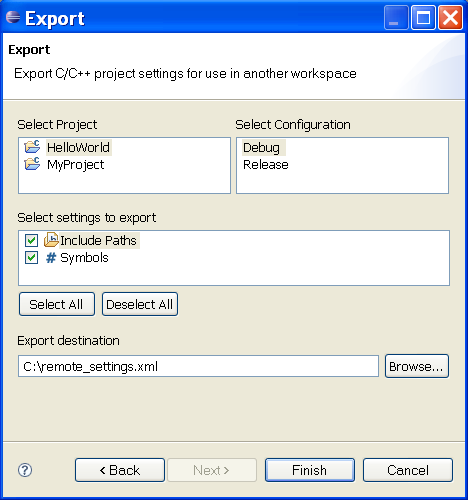

Exporting C/C++ Project Settings
To access the project settings export wizard do the following:
-
Open the Export Wizard Dialog by selecting File > Export... or
activate a context menu on a C/C++ project and select Export....
- Select C/C++ > C/C++ Project Settings.
- Click Next

To export the settings for a project do the following:
- Select a project. Only open C/C++ and Remote C/C++ projects are listed.
- Select a build configuration
- Select the types of settings to be exported
- Choose a file to export the settings to. The settings are exported as an XML file.
- Click Finish
